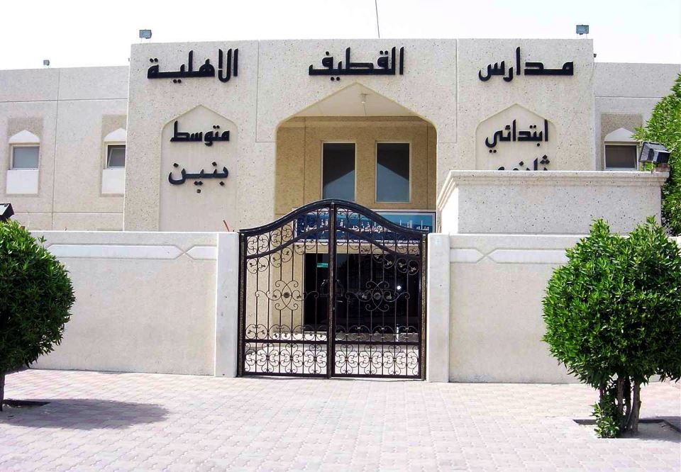

Education Centers
Qatif Private Schools
The school is located in the area of Al Nasrah north of the city of Qatif on an area of more than seventeen thousand square meters, and is divided into primary, middle and secondary schools. The buildings include classrooms, management, computer and technical rooms, science lab, library, gym, swimming pool and football, volley and basketball fields.
The school is owned by Manahel Al-Alam, a joint stock company owned by a group of citizens who seek to serve their country and their community.
Qatif College of Technology
The College of Technology was established in Qatif Governorate under the guidance of His Excellency Dr. Ali bin Nasser Al-Ghafais, Governor of the General Organization for Technical and Vocational Training, issued on 1/1/1429 AH, to be the first academic college for male students in the governorate to accommodate a number of high school graduates wishing to enroll in the technical field. The college offers a diploma degree in Information Technology and Managerial Technologies.
Qatif Community College
Qatif Community College Female Branch became affiliated with the University of Dammam in 1423 AH/2002 CE and is an academic institution that is dedicated to its students as well as serving the local and national communities. The College is committed to preparing and training its students by using academically sound and nuanced curricula and by providing state-of-the-art laboratories and other facilities that give the students an opportunity to distinguish themselves, serve their society and take responsibility in building and enriching the country.